Multiple Bugzilla versions supported

| Release | Resolved | Community Contributions |
| 0.4.10 March 17, 2006 |
80
reports |
Robert Elves contributed the Task Activity view, ported the Bugzilla editor to Forms, and resolved numerous bugs. Ian Whalley provided patches for Bugzilla and IBM JDK compliance. Eugene Kuleshov provided patches for improved task comparison and repository protocols. Wang Bin provided additional source code scrutiny and optimizations. Peik Aschan provided a useful assertion test case. |
| 0.4.9 Feb. 23, 2006 |
50 reports |
Robert Elves provided patches that resolved 17 reports. The JIRA support was made possible by Brock Janiczak's help and his JIRA Core Services feature. Wesley Coelho provided initial integration patches and 10 very valuable JIRA test cases, and Eugene Kuleshov helped with debugging. Wang Bin provided patches for JUnit integration and code quality. Tom Eicher and Daniel Megert made tighter editor integration possible with new SDK content assist and folding APIs. |
| 0.4.8
Jan. 30, 2006 |
52 reports |
Robert Elves has provided numerous fixes to the Task List and Bugzilla Client. Brock Janiczak provided a patch that improved the multi-repository aware wizard, and with Eugene Kuleshov provided valuable feedback on the UI and architecture for task repository support. |
| 0.4.7
Jan.16, 2006 |
36 reports |
Brock Janiczak fixed lazy loading of image registry, provided 3.2M4 patches, and a highlighter fix. Robert Elves improved external browser integration and the task editor. David Bari and Tomasz Smietanka set up bugzilla servers with alternate encodings. Eugene Kuleshov provided an idea for avoiding inducing interest on resources upon check-out. |
| 0.4.6
Dec. 16, 2005 |
24
reports |
Brock Janiczak contributed SAX based context externalization to replace the considerably slower DOM based version. |
| 0.4.5 Dec. 12, 2005 |
24 reports |
Brock Janiczak contributed an improvement to the Task List extension point schema and patches for compatibility with the upcoming Eclipse 3.2M4 release. Wes Coelho improved the date chooser dialog. |
| 0.4.4 Dec. 2, 2005 |
39 reports |
Wesley Coelho added support for in-progress tasks in the Task Planner and background saves of the task list. Igor Fedorenko provided a patch for an NPE in the java problem resolution, and Ian Bull provided a patch to the for setting platform and hardware defaults in the bug wizard. |
| 0.4.3 Nov. 22, 2005 |
32 reports |
Leah Findlater continued to improve the extensibility of the Mylar Monitor for her upcoming study of WTP usage. |
| 0.4.2 Nov. 14, 2005 |
31 reports |
Leah Findlater helped make the Monitor more extensible to other user studies. |
| 0.4.1 Nov. 4, 2005 |
28 reports |
Wes Coelho provided a history navigation patch and other improvements to the Task List. |
Also see the New & Noteworthy for the Mylar 0.3.x preview release.
Bugzilla Connector users: after updating, if you get a "Could not log in" error when synchronizing a query and your credentials are correct open it, verify that it is associated to the correct repository, and click OK (some older task lists did not properly associate queries with repositories).
JIRA Connector users: JIRA Core Services 0.8.0 (from Tigris.org) will get installed with this release.
Eclipse 3.2 users: this release supports Eclipse 3.2M5 (M4 is no longer supported). The ustom Mylar editor is gone (see below), so before restarting deactivate the current task or close all active editors, and run the New -> Mylar -> Preference Configuration wizard (it should pop up automatically). If auto folding doesn't work reset the folding provider (see Active Folding).
|
Multiple Bugzilla versions supported |
Bugzilla versions are now associated with each repository, and can
be set from the Task Repositories view. Bugzilla 2.22rc1 is
also supported.
|
|
|
|
|
Task priorities and status indication |
NOTE: you may need to resize your columns after
updating. Task priorities are now icon based instead of using the Bugzilla P1..5 scheme, and the default priority has no icon. More task status is indicated
|
|
|
|
|
Form-based Bugzilla Editor |
The Bugzilla editor now uses Eclipse forms.
|
|
|
|
|
Task Activity view |
The experimental Task Activity view and will replaces the Task
Planner wizard for viewing task activity, and appears in the new
Planning perspective. This view shows the task activity context,
which will drive the Apply Mylar to Task List action coming in 0.5.
Note that elapsed times are still approximate, and will be more
configurable for 0.5. Tasks can be dragged to the current, next, or
future week to set reminders for those weeks.
|
|
|
|
|
No more custom Java Editor (3.2 only) |
The custom Mylar Java editor is gone, and the automatic folding and content assist integration will now work with any Java editor, e.g. AJDT's, thanks to new Eclipse APIs. |
|
|
|
| Active folding has been improved, no longer requires the Mylar Java Folding provider, and should work with any Eclipse 3.2-based Java folding provider in addition to the default one. If you were using Mylar's active folding restore the default provider via Preferences -> Java -> Editor -> Folding -> Restore Defaults (first deactivate the active context to close all open Java editors). | |
|
|
|
|
Persistent Context Change Sets |
The automatic task context change sets now persist, so that if there
are any uncommitted resources in the change set it will not
disappear when the task is deactivated, and multiple change sets can
be present. While the context change sets are affected by
interest manipulations (i.e. marking a file uninteresting will
remove it from the change set), they do not 'see' the interest decay
in order to indefinitely retain any resources modified as part of
that task. If resources are changed outside of the context
(e.g. by applying a patch) they can be added to the task via the Add
To menu (visible below). If the task context they are added to
is active those resources will be also come interesting. 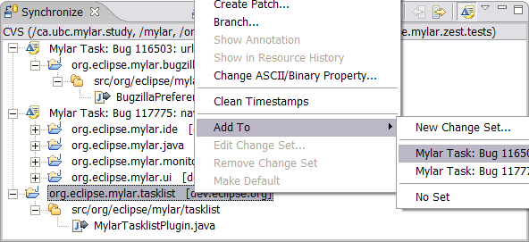 |
|
|
|
|
Resource Creation |
Newly created resources (e.g. packages, classes, files) now get added automatically to the active task context. |
|
|
|
|
Editor Management |
If the Manage Editors with Context option is selected open editors
will correspond to the active task context: - On task activation the editors of the most interesting elements will be automatically opened, and populate the Ctrl+E list. Set the number of editors to open on the Mylar preference page. - Closing an editor will mark the corresponding file and all children uninteresting (Note that "Mark Less Interesting" now recurses to children). So if you navigate to something uninteresting simply hit Ctrl+F4. - Note that this option will turn off the Eclipse "Close editors automatically" option, but will set it back to it's original state if toggled off. 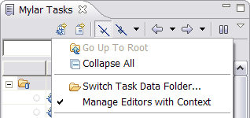 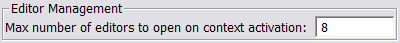 |
|
|
|
|
Mapping of Incoming Changes to Reports |
When the Synchronize view is in Incoming and Change Sets mode
(visible below), and Mylar Change Set support was used to commit,
incoming changes will be grouped by task description. Right
clicking a Change Set will bring up an "Open Corresponding Report"
action to navigate to the corresponding issue (either Bugzilla
report or Web Link). The same action is available for
navigating from commit messages to reports in the CVS Resource
History view.
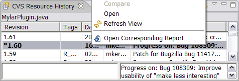 |
|
|
|
|
Context Capture Pause Indication |
Pausing context capture is now indicated on the status bar.
Note that other notifications can occlude this one, so if you notice
newly selected elements not populating the context check the state
of the toggle button on the Task List. 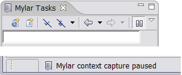 |
|
|
|
|
Change Set Integration |
The active task now corresponds to a Change Set that's managed by
Mylar. All resources in the task's context automatically get
included in this change set, making it possible to synchronize and
commit only those resources. Resources modified that are not
part of the Task Context will appear outside of the Change Set in
the Synchronize view. Note that as with other Change Sets you
need to set the Synchronize view into either Incoming or Outgoing
mode and toggle the "Show Change Sets" button. 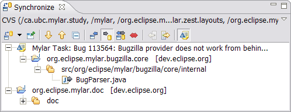 |
|
|
|
|
Commit Task Context |
Resources in the Task Context can be committed either by
right-clicking the active task and selecting the Commit Task Context
action, or by right-clicking the Change Set in the Synchronize view.
In both cases the commit message will be populated by the
description and URL of the task (if available). The comment
prefix can be changed in the Task List preferences page. 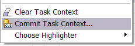 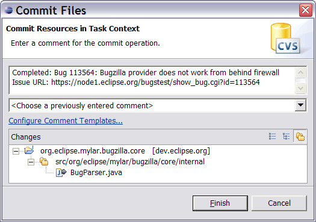 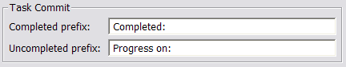 |
|
|
|
|
Support for Hierarchical Problems Layout |
The Mylar interest filter can now be applied to the Eclipse 3.2
Hierarchical Layout of the Problems view. The Flat Layout is
recommended when Mylar is applied, since it helps focus on the
markers of interest.
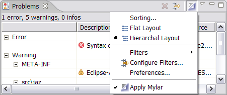 |
|
|
|
|
Task context indication |
If a task is inactive, but has a context associated with it, the
Activate widget appears lightly filled (i.e. as bug 111722 below).
|
|
|
|
|
Pause and resume context capture |
Pause and resume task context capture using the drop-down menu on
the Task List. This can be useful for quick diversions that
don't warrant a new task. As a reminder of context capture
being paused, the Title of the Mylar Tasks view will change.
|
|
|
|
JIRA Connector |
JIRA tasks and queries are now supported in the task list. Add
a new JIRA repository via the Task Repositories view, then
right-click in the task list to Add a New Repository Query, and
select from one of your existing JIRA filters. Note that on
very large repositories (e.g. Codehaus the very first query that's
run on a newly added repository will be slow).
Refer to the Getting Started page for an integration overview. Also note that the task list now provides icon overlays indicating repository task type/severity, and text overlays for queries indicating the repository.
|
|
|
|
|
Task data import |
Task date can now be imported from an existing .mylar directory, or
from a backup zip file created by the Mylar export wizard.
|
|
|
|
|
Active task indication |
The currently active task is indicated with a hyperlink below the
toolbar that can be used to bring the task into focus (Eclipse 3.2
only).
|
|
|
|
|
Notification popups |
Task reminders no longer appear in a separate dialog windows.
When a task becomes overdue, a notification 'toaster' pops up that
can be used to bring the task up. The notification will not
come up again, since the overdue task will be colored red and always
visible in the task list until the reminder is reset.
|
|
|
|
|
Support for Multiple Repositories |
Preliminary support for multiple repositories is included, so more
than one Bugzilla repository can be used. The repositories
view is visible by default in the Team Synchronizing and CVS
Repositories perspectives. 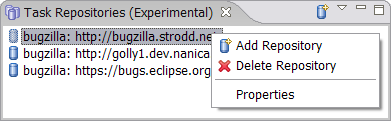 |
|
|
|
|
External Browser Integration |
Tasks can be created by drag-and-dropping a URL from a link or from
the Address bar onto the task list, causing the web link and
description to be set automatically. In Mozilla, simply drag
the URL. In Internet Explorer you must have Ctrl pressed in
order for Eclipse to recognize the drop. Tasks with web links and bug reports can also be opened using the default external browser. 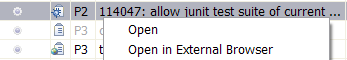 |
|
|
|
|
Overdue Tasks |
If you have been using task reminders you may notice tasks
previously filtered showing in red. Tasks that are not
completed and are past their reminder date will no longer get
filtered away. The reminder date of a task a task or bug
report can be cleared using the Task Info editor tab.
If a category has overdue
tasks in it that category will be colored red.
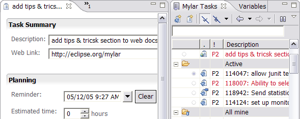 |
|
|
|
|
Multiple Selections |
Multiple selections, made by Ctrl and Shift clicking, are now supported. You can now drag-and-drop multiple tasks, mark completed, delete, and synchronize multiple reports. If you are using Eclipse 3.1, note that elements will not be selected automatically when your right-click them to bring up the popup menu, so you need to first select the element and then bring up the popup. |
|
|
|
|
Improved Task Manipulation |
Dragging and dropping items to categories moves them, and items can
be dragged into the root. Also, if the Mylar Tasks view is in
fast view mode the active task will be indicated when you mouse over
the icon and on the view description bar. |
|
|
|
|
Task Planner |
The Task Planner has been available for a while is still
experimental, but the UI has improved. Invoke it via File ->
New -> Other -> Mylar Task Planner, specify the number of days, and
you will see a report of your past activity. You can drag
tasks from the task list into the plan (e.g. from a Bugzilla query),
and set their reminders and estimates. All tasks in the plan
can be automatically added to a category.
|
|
|
|
|
Improved Task List actions and shortcuts |
The Task List popup menu has been improved to be more context
sensitive and to always create items in the category that is
currently in focus. Tooltip behavior has been improved.
Common actions are now keyboard shortcuts: - New Task: ins - Delete: del - Rename: F2 - Copy Description: Ctrl+C 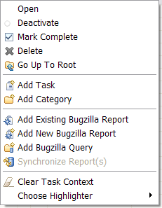 |
|
|
|
|
Links to web reports |
Tasks can be linked to web pages. For example, if you want a
task to correspond to a Wiki page or to a bug report copy the URL of
the report, click the New Task button on the Task List, and the URL
will automatically be inserted in the Web Link field. If you
click Get Description the title of the page will be inserted into
the Description field. The task will appear with a Web icon
decorator, and will automatically bring up a Task Editor page that
loads the web link when opened.
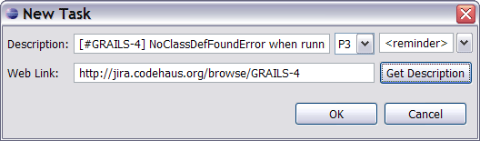
|
|
|
|
Task context data export |
The Mylar Task List and related data can be exported, e.g. for
backup purposes. You can now export to an archive file. 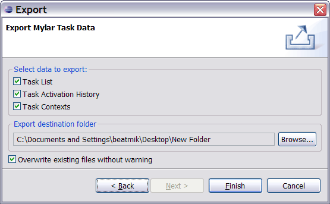 |
|
|
|
Support for Unicode Character Sets |
Bugzilla character settings are honored. For repositories
older than 2.20 you may need to use the internal browser for
submission if encoding is ignored. 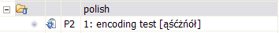 |
|
|
|
|
Improved Outline |
The Bug Editor Outline can be used to navigate the report by
commenter and date. 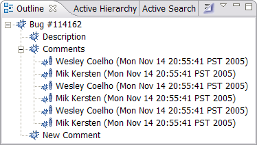 |
|
|
|
|
Proxy settings |
To enable use with firewalls and proxy servers the Bugzilla Client follows proxy settings set in the Install/Update preference page. |
|
|
|
|
Bugzilla 2.20 support |
Bugzilla support has been updated for version 2.20. If you are
switching from Bugzilla 2.18 to 2.20 you will need to update the
existing Bugzilla Queries in your task list. Double click each
query category to edit it, press "Update Options", and then simply
click OK to save the query. Please note that the default
Bugzilla configuration is now 2.20.
|
|
|
|
|
Browser tab for Bugzilla reports |
A new editor tab makes it easy to switch from the Bug Editor to
Browser-based editing. Note that when using the Browser
queries will not automatically refresh after submitting changes on a
bug. You can set the Browser to be the default editor in the
Task List preference page. 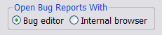
|
|
|
|